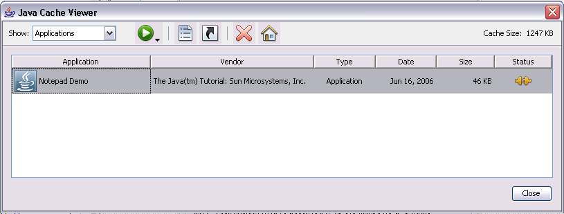
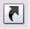
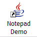

Users can run Java Web Start applications in the following ways:
Note: Users of applications deployed with Java Web Start must have a compatible version of the Java Runtime Environment (JRE). The complete JDK is not required.
You run an application with Java Web Start from a browser simply by clicking a link to the application's JNLP file, such as:Java Web Start then loads and runs the application based on instructions in the JNLP file.<a href="Notepad.jnlp">Launch Notepad Application</a>Try it now: Run Notepad
If you are using Java Version 1.6.0, you can run a Java Web Start application through the Java Cache Viewer.When Java Web Start first loads an application, information from the application's JNLP file is stored in the local Java Cache Viewer. To launch the application again, you do not need to return to the Web page where you first launched it; you can simply open the Java Cache Viewer.
To open the Java Cache Viewer:
- Open the Control Panel.
- Double click on the Java icon. The Java Control Panel opens.
- Select the General tab.
- Click View. The Java Cache Viewer opens.
The application is listed in the viewer:
To run the application, select it and click the Run button, , or double click the application. The application starts just as it did from the Web page. 
Java Cache Viewer application
Through the Java Cache Viewer, you can add a shortcut to the application to your desktop. Simply select the application, right-click and select Install Shortcuts, or Click the Install button, . A shortcut is then added to the desktop: You can then launch the Java Web Start application just as you would any native application.